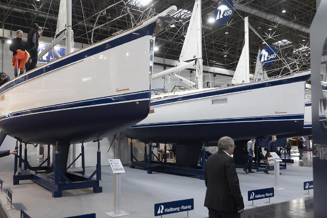

De beurs met de mooiste URL van het hele internet (www.boot.com) vindt dit jaar plaats van 20 tot 28 januari. Een gigantisch evenement met een 20-tal reusachtige hallen en duizenden standhouders, voor alles van een klein schroefje tot een jacht van 80 meter. De moeite om eens gezien te hebben, voor iedereen die van lange wandelingen houdt...

In der Halle 16 zeigen die internationalen Segelyachthersteller mit ihren großen Flotten Flagge. In einer beeindruckenden Präsentation sind 2023 wieder nahezu alle großen Anbieter mit Segelyachten von 22 bis 70 Fuß, aber auch viele Newcomer in Düsseldorf dabei. Die boot Düsseldorf ist seit 54 Jahren der Heimathafen und der Motor für den internationalen Wassersport. Sie bietet vom 21. bis 29. Januar 2023 Bootssport in allen Facetten und hat die Topmarken an Bord. Sowohl Segler als auch Motorbootfahrer finden hier vom Einstiegsbötchen und der Jolle bis zur Luxusyacht ein umfassendes Angebot. Auch Tauchen, Surfen, Paddeln oder Angeln stehen auf der boot im Fokus. Mit den innovativen und technisch ausgefeilten Produkten der Aussteller ist die boot die internationale Innovationsplattform ihrer Branche und jedes Jahr im Januar das Startsignal in die neue Wassersportsaison. Das umfassende touristische Angebot zum Urlaub und Sport auf, am und im Wasser der „Destination Seaside“ lockt alle Menschen, die ihre Freizeit am Meer, an Flüssen und Seen verbringen wollen. Attraktive Bühnenprogramme mit interessanten Interviewpartnern aus der Branche, neueste Trendsportangebote und ein hochkarätiger Mix aus Workshops und Meetings sowohl für den Freizeitsportler als auch für Experten machen die Messe weltweit einzigartig. Damit ist die boot Düsseldorf sowohl für die wassersportbegeisterte Familie als auch für internationale Fachleute 2023 wieder die erste Adresse.
Ik moet nog een paar dinges aankopen en ga hopelijk ter plaatse kunnen profiteren van nog wat beurskortingen. En ik keer ook altijd terug met een paar ongeplande aankopen... shoppen, shoppen, shoppen voor de echte matroos.
Dit jaar rijd ik heen en weer op 26 januari om de weekenddrukte wat te vermijden.